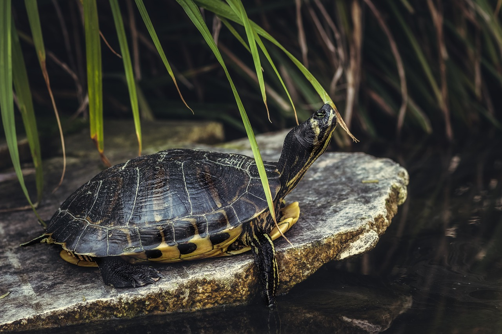
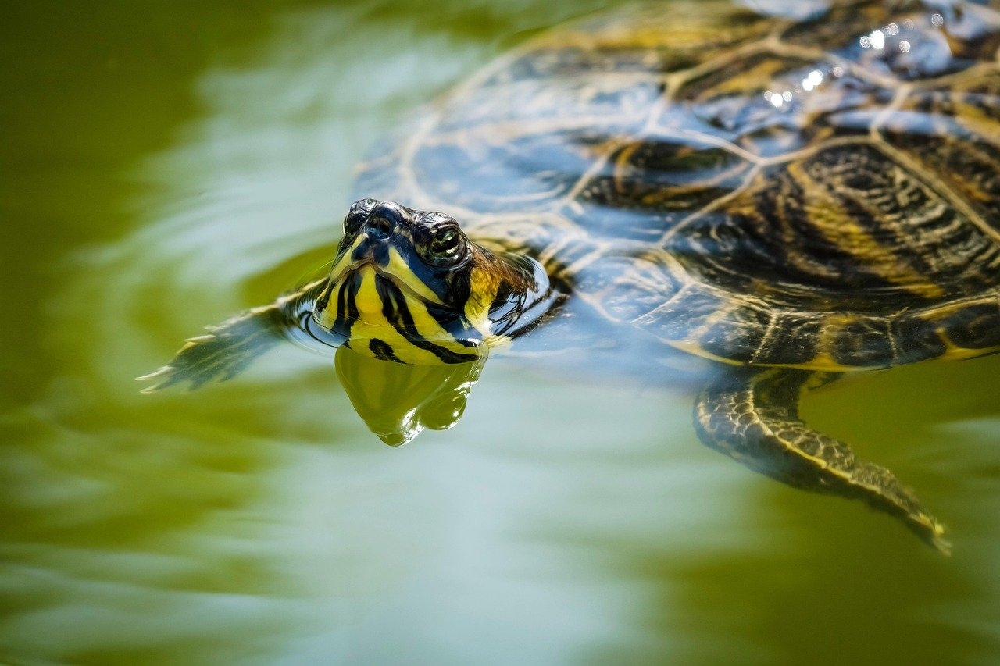

거북이 설명
(사진 위 마우스 호버)


파충류에 속하는 동물로, 그중 반수생거북은 땅과 물을 오가며 생활하며,
육지 거북과 함께 가장 대중적인 반려 거북 종이다. 수족관에서도 흔히 보고 구할 수 있다.
주로 강, 호수, 연못 등의 담수 체계와 인접한 지역에서 살아간다.
육식에서 잡식을 하며 벌레, 감마루스, 해초, 채소 등 먹이가 다양하다.
어릴 때 작은 모습만 보고 데려와 뒤늦게 수명과 크기를 보고
파양하는 인간들 때문에 강과 하천에서도 볼 수 있다.(생태계교란종이나 유해동물로 지정된 종이 많다.)